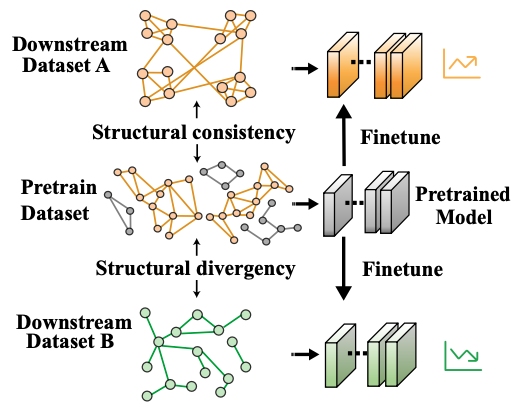

Qi Zhu
Table of Contents
Quick Links
|
Applied Scientist Think Forward Lab AWS AI/ML Services & Infrastructure Email: qi.zhu.ckc@gmail.com Bio I obtained my Ph.D. in Computer Science from University of Illinois at Urbana-Champaign advised by Prof. Jiawei Han, where I was a member of Data and Information Systems Laboratory (DAIS) and Data Mining Group. Here is my CV (slightly outdated). |
Research
At AWS, I design AI systems (GraphStorm) utilizing structured knowledge for applications in retrieval-augmented generation (RAG), graph machine learning, and beyond. As a founding member of the GraphRAG Team, I help drive the launch of structure-aware features across various RAG services.
My current and past work focuses on the following themes:
- LLMs with Structured Knowledge – Harnessing explicit and implicit data structures to enhance the long-context performance and parameter efficiency of large language models.
- Graph Representation Learning – Representing objects in heterogenous text-attributed graph with heterogenous learning, and robust to distribution shift.
I. LLMs with Structured Knowledge
We aim to make LLMs more efficient and resilient against hallucinations by harnessing structured knowledge. A key challenge lies in making the language model structure-aware while mitigating performance bottlenecks, such as the lost-in-the-middle phenomenon, To address this, we explore post-training, fine-tuning, and pre-training techniques on graph structured data.
- Graph Retrieval Augmented Generation: We develop structure-aware algorithms for pre-retrieval, retrieval, and inference stages of RAG.
- AGENT-G: An Agentic Framework for Graph Retrieval Augmented Generation, Under Review
- Supervised Fine-tuning LLMs on graphs: We propose parameter-efficient fine-tuning of billion-scale GNN-LLM architecture to align the latent space between structure and text. The goal is to better adapt LLMs on graph representation learning with small of computation resources.
- Pre-training Cascading GNN-LM: Numerous real-world application can be modeled as a text-attributed graph such as citation network and social network, where nodes or edges contains useful text information. We pre-train million-scale language model with GNN layers interleaved in transformers.
II. Graph Representation Learning
My research aims to make graph representation learning adapt to distribution shift and data heterogeneity.
- GNN Out-of-distribution Generalization:
Graph neural networks are notoriously poor at generalizing to out-of-distribution target data.
We conduct theoretical analysis of their generalization properties and introduce unsupervised loss between training and target distributions to enhance robustness and performance on unseen data.

- Fine-Tuning Graph Neural Networks by Preserving Graph Generative Patterns, AAAI'24
- May the Force be with You: Unified Force-Centric Pre-Training for 3D Molecular Conformations, NeurIPS'23
- Shift-Robust GNNs: Overcoming the Limitations of Localized Graph Training Data, NeurIPS'21
- Transfer Learning of Graph Neural Networks with Ego-graph Information Maximization, NeurIPS'21
- Heterogenous Graph Representation Learning:
Awards
- 2020 Amazon AWS Machine Learning Research Award
- 2018 ACM WWW Best Poster Honorable Mention